Intellij gradle 빌드가 너무 오래 걸릴때.(1분이상)
문제상황
필자가 코딩테스트를 했었는데 빌드만 인텔리제이에서 1분이 넘게 걸리는 묘한 상태에 빠졌었다.(아래 이미지 참조)
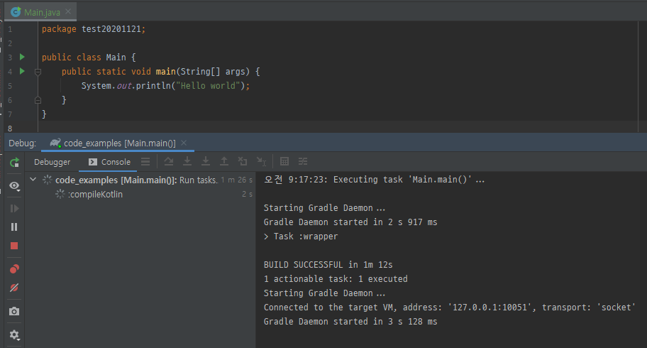
여태 이런적이 없었는데 가는 날이 장날이라고 꼭 바쁜 상황일때 이런 일을 겪는거 보면 난감하기만하다.
당시에는 시간이 급해서 환경세팅을 다시할 자신이 없었기에 최대한 빌드를 적게하는 방향으로 진행을 했지만 (180분 코테에 10번만 빌드를 해도 10분이 훌쩍 지나가는데 최소 30번 이상을 했으니…. 계속 값을 확인해야했으므로 실행을하려면 빌드가 필수였다.)
오늘 intellij를 키려고보니 예전 빌드가 잘 안되던게 생각이 나서 이 부분을 바로 잡으려고 세팅중에 나와 같은 문제를 겪을 사람들이 있을거라 생각이 들어 글로 정리를한다.
해결방법
오전 9:17:23: Executing task 'Main.main()'...
Starting Gradle Daemon...
Gradle Daemon started in 2 s 917 ms
> Task :wrapper
BUILD SUCCESSFUL in 1m 12s
1 actionable task: 1 executed
Starting Gradle Daemon...
Connected to the target VM, address: '127.0.0.1:10051', transport: 'socket'
Gradle Daemon started in 3 s 128 ms
> Task :compileKotlin
일단 전반적으로 어느정도 실행이 됐을때 메세지이니 가장 오랬동안 hang 상태에 있던 상태의 모습을 캡처해서 보면
위의 상태에서 1분 이상 소비가 된다.
처음에는 gradle daemon이 오래 뜨는건지 알았는데
Starting Gradle Daemon...
Gradle Daemon started in 2 s 917 ms
위의 메세지처럼 데몬 실행시키고 시작된게 3초 남짓이다.
그럼 intellij -> gradle을 호출하는 과정중에 시간이 오래 걸리는 것으로 판단된다.
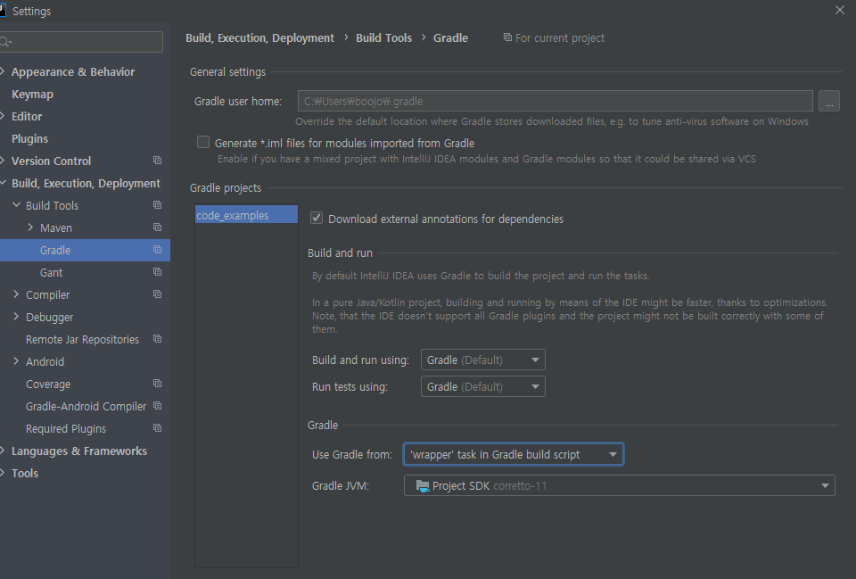
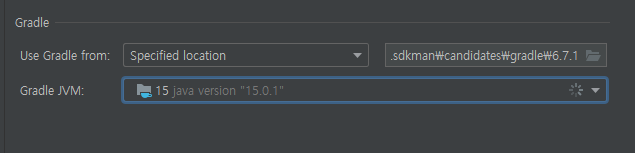
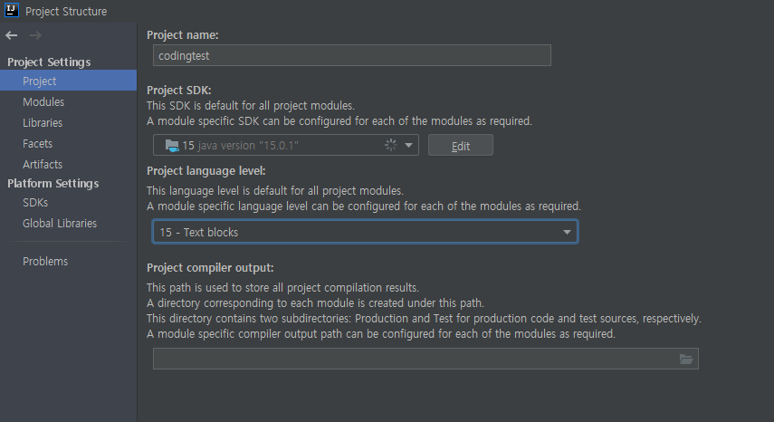
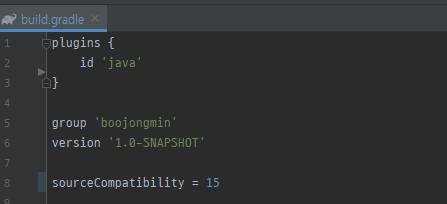
위와같이 처리를하니
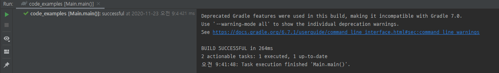
run은 1초 미만
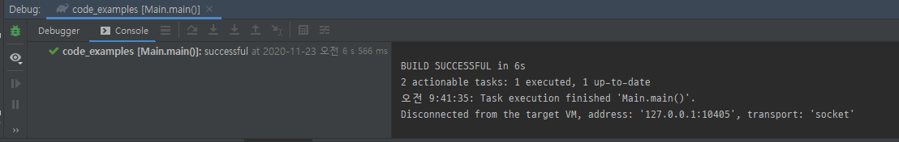
debug는 7초 미만으로 동작을 하게 되었다.
일단 내가 원하는대로 속도를 줄일 수 있게 되어 만족한다.
기존의 문제점 고찰
그럼 기존에는 무엇이였을까?
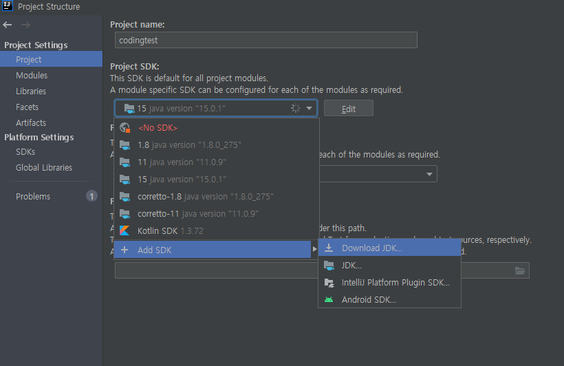
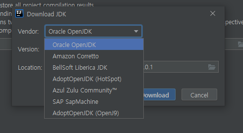
일단 위의 이미지처럼 intellij에서 제공하는 jdk를 설치했었다.
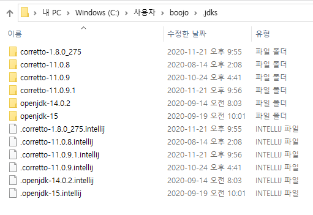
그럼 위와 같이 jdk를 설치를해줬고
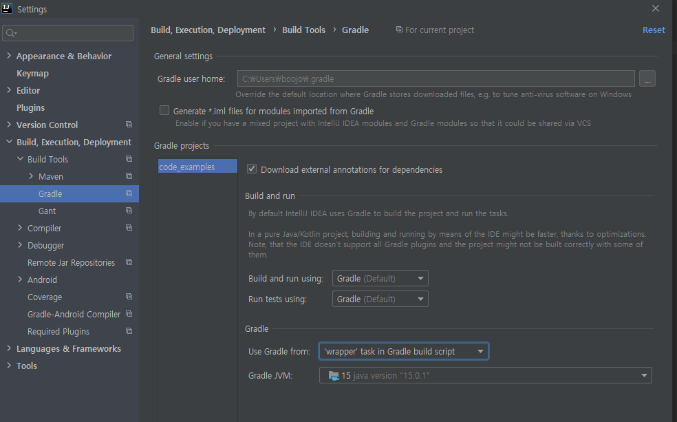
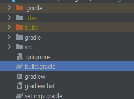
위와 같이 project에 있는 gradle wrapper를 썼다.
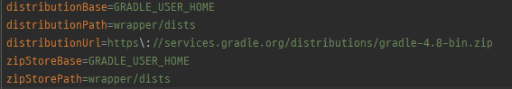
근데 properties에 있는 gradle wrapper는 4.8로 보이는데. 흠… 4.X와 그 이상의 버전 5.X, 6.X의 차이를 좀 살펴봐야겠지만
일단 꽤 오래된 gradle 버전이란 것을 알 수 있었다. (단순 버전때문이라고 결론 지으면 안된다. 그전에도 4점대로 잘 썼기 때문에…)
추측되는건 gradle daemon 버전이 5.X에서 시작됐다고 들은 것 같은데 intellij가 이제는 무조건 daemon으로 뜬다고 생각하고 daemon을 붙으려고하는데 붙지를 못해서 legacy 형태로 동작하는것의 timeout이 1분이 아닐까하는 추측도 해본다.
고찰하면서 제대로 처리한 해결 방법
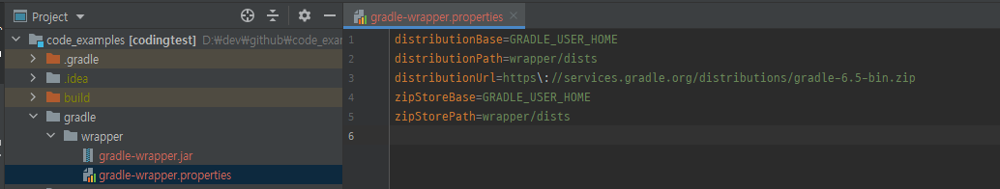
글을 작성하면서 gradle version과 deamon 동작 방식 그리고 intellij 최신버전과의 동작의 충돌로 인해 오래 걸리는 것 같다는 추측으로
그림과 같이 gradle wrapper를 최신 버전으로 교체하고 동작을했다. (물론 intellij에서 download 받은 jdk로 설정을 교체했다.)
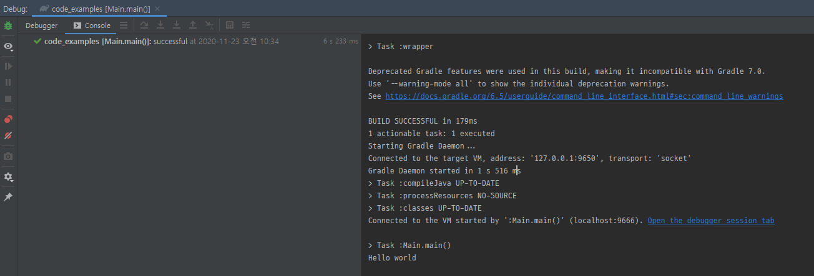
위와 같이 빠르게 빌드가 되고 실행이 되는 것을 확인 할 수 있었다.
결론
오픈소스 생태계에 살고 있으면 stable한 최신 버전을 따라가야한다는 걸 다시 한번 느낀다.